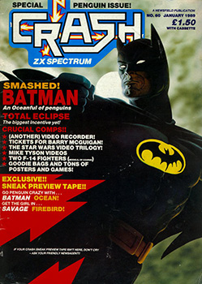
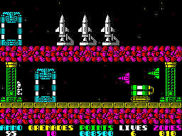
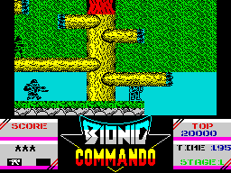
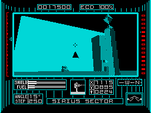
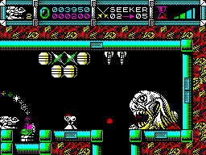

Lloyd Mangram LOOKS BACK At 1988
Taken From CRASH Issue No. 60, January 1989
CRASH's own Master of Ceremonies, LLOYD MANGRAM, gets out his old binder and reflects over the past year. A year which saw bundles of budget games overflowing a market which had just discovered the lucrative market of film licences...
Probably the most noticeable trend in 1988 has been the decline in the number of full price releases. Budget games, by contrast, seem to have reached an absolute apogee - to decline next year, I forecast. While the poor quality of many of them is disappointing they sell extremely well, dominating the Gallup charts. But what can be welcomed almost without reservation is the tendency for full-price software, often of the highest quality, to be rereleased at a budget price. For people who missed them the first time around these are a golden opportunity to catch up on CRASH Smashes.
Licensing deals still continue to dominate the industry, Postman Pat has extended this even into the budget side of things. On the plus side the quality of many of these games seems to have improved, RoboCop's a sterling example of that. While I would still prefer games to be inspired by original gameplay, rather than cashing in on a popular film/coin-op, there's much to celebrate about 1988.
January
Ocean started off the year with a New Year's resolution to produce CRASH Smashes, Combat School was their first, a coin-op conversion which superbly recreated arcade playability over seven training sessions. Physical exertion of a more peaceful type (or maybe not) featured in Ocean's second Smash - Match Day II. The original game narrowly missed being a Smash, but went on to kick around the Readers' Charts for three years! Programmers Jon Ritman and Bernie Drummond incorporated a host of new features to make the sequel the definitive football sim - Phil's favourite game.
Narrowly missing a Smash was Infogrames' Sidewalk - an adventure so novel it got reviewed like a normal game! The typically Gallic objective was to get yourself ready for taking out your girlfriend. As the year progressed French software houses became increasingly active in the UK market, and with games like this they were very welcome. A rather less original game was the much-belated official conversion of the Star Wars arcade game. While two reviewers raved over it, Robin was more reserved, thinking it a little late.
Outside the review pages Simon Goodwin exclusively revealed news of the Spectrum superclone SAM. Intended to be just £99.95 with superior hardware its maker (Miles Gordon Technology) have wavered between promoting it as a games machine, or an education computer for export. We're still waiting to see it released for either market.
On a sadder note January saw the departure of Derek Brewster CRASH's long-standing adventure columnist whose wide-ranging introductions were famous. The author of some brilliant games for the now-defunct Micromega, Derek left to begin his own software house - Zeppelin Games. For the next few months the adventure section was to be handled by the normal reviewing team.

February
A trio of Smashes featured in this Issue, one arcade, IK+; one adventure, Knight Orc, and one strategy, Blitzkrieg. Unfortunately CCS's strategy Smash was to be one of a very rare breed in '88. Philippa had very little to review. Just below 90% was Super Hang On, a respectable arcade conversion, Inside Outing, a MOVIE lookalike from The Edge; Terramex, Quicksilva soldiered on with another arcade adventure, and finally Flying Shark.
The last of these was developed by Graftgold, a programming team who 'defected' from Hewson to Firebird.
Strengthening the CRASH team were new reviewers Mark 'James Brown' Caswell and Gordon 'Hunter's Moon' Houghton. The latter was subsequently kidnapped by ZZAP!, brainwashed and eventually fooled into becoming Editor there.
March
Causing something of a buzz this month was Firefly, the first release from Special FX, a new Liverpool-based programming team of mostly ex-Ocean staff - the marketing of their games remained with Ocean, though.
Arcade action in the Exolon vein gave Gremlin Graphics their first hit of '88, impressing us all with some big and colourful graphics in Northstar. More comic entertainment was provided by The Edge's Garfield licence - Big, Fat. Hairy Deal. Combining the wit of the cartoon with a real arcade adventure challenge earned a Smash.
Another successful licence was the Oscar-winning Vietnam movie Platoon. Ocean used it to sell an extremely playable game which drew obvious inspiration from the film.
April
April is traditionally spring cleaning time at the Towers. Time to sweep out the old and introduce the new. In this case Barnaby Page was the old and rather well-worn while Steve Jarratt and Katharina Hamza were still wrapped in cellophane. In addition a strange new Egyptian personage took over the adventure column and was greeted with two Smashed games from Rainbird - Guild of Thieves and Jinxter.
For most readers, however, the game of the month was obviously Hewson's Cybernoid. Programmed by Raffaele Cecco and Nick Jones it showed Hewson didn't rely on Graftgold for quality product. A strong contender for shoot-'em-up of '88 it's Nick Roberts' favourite game. By contrast with such originality Imagine's coin-op conversion Rastan was, while very good, not of Smash quality (despite what the adverts said!).
Yet more evidence for the importance of originality and technical innovation was produced by the 1987 CRASH Readers' Awards. Incentive's Driller won a total of five awards including Best Game and Best Graphics. Sadly missing from the awards was a software house which, without a single licence, dominated Spectrum gaming between 1984 and 1986. Throughout their reign Ultimate refused all interviews, building up an incredible mystique. In 1988 they finally gave an interview to Roger Kean (former CRASH Editor), explaining why they'd disappeared from the UK market and how the revolutionary Knight Lore had been held back from release for a YEAR after its completion.
May
Undoubted start of this issue was Nick Roberts, whose Playing Tips extravaganza put his picture on the cover. Sharing it with him was Action Force II, a Smashed licence which followed an original rated at just 35%. Congratulations to Virgin Games for that. Another sequel, and just as violent, was Imagine's Target Renegade. A two-player option, more content (via a multiload) and even better playability made this a hit.
But Spectrums have more to offer than just mindless violence, and Pete Cooke proved it with the budget puzzler Brainstorm. Beneath some very primitive graphics was a highly addictive game. And an even more complex challenge was provided by CRL's Sophistry. 21 levels of isometric puzzles required close reading of some baffling instructions. Once you figured it out, though, this was a compellingly original game. Sadly its release by CRL marked the close of a distribution deal with Electronic Arts, which developed into a bitter legal wrangle.
A happier note was sounded in this Issue by the historic victory of Robin Candy in the CRASH Challenge. Finally a reviewer had won! Star Wars provided the entertainment.

June
Pete Cooke scored his second hit in as many months with Earthlight. Principally a shoot-'em-up, it used a novel 3-D presentation to impress CRASH's hardened reviewers. By contrast US Gold's GO! label chose a licence over originality in converting the Capcom arcade hit Bionic Commando. Fortunately the game itself was fairly novel, the hero swinging from tree to tree with his bionic arm, while the programming was impressive. One of the better coin-op conversions, in fact.
A licence of a different sOrt was popular with Gremlin who'd previously produced two MASK games. The third was the best of the lot and VENOM Strikes Back was duly Smashed. Great use of colour and sound, together with gripping gameplay, made for a fantastic game.
Acheton, by contrast, was text-only. But Samara raved over Topologika's classic, disk-only adventure. Elsewhere in the magazine Raffaele Cybernoid Cecco began his month-by-month account of the programming of Stormlord.

July
Precariously taped to this month's cover was one of our intermittent Sneak Preview cassettes. Playable demos of Incentive's Dark Side and System 3's Last Ninja II made the extra 25p cost well worth it (in our opinion). As for actual reviews Domark returned with The Empire Strikes Back, blessed with more ambitious 128K sound than the ST - an excellent conversion of the arcade game. A perhaps even bigger licence backed Gremlin's superb Mickey Mouse. Five limited sub-games, together with some great graphics and playability made for a novel game.
The issue's top two games bravely disdained costly licences however. Spectrum veterans Denton Designs dropped four people into a land Where Time Stood Still. Beautiful to look at, with great prehistoric monsters, the only pity was that it was 128K-only, and perhaps not as big as it first seemed (a 48K version is in the pipeline!). Even more impressive graphics of the Freescape variety featured in the Driller sequel Dark Side. Marginally faster with much greater depth of play this was another superb game from Incentive. Readers who doubted it only had to look at the demo to be convinced.
As to features we had the debut of Mel Croucher's irregular Monitor feature which has been amusing, irritating and provoking readers ever since. His first article on computer addiction set the tone for what was to follow.
August
This month saw another CRASH editor, Steve Jarratt, depart for those ever greener new pastures. Taking his place was a confirmed Spectrum enthusiast, who'd been with CRASH almost right from the start as one of the anonymous (for tax reasons in his case) reviewers. Dominic Handy enthusiastically took over the magazine's helm and readers were soon learning of his problems in getting a new Ford Fiesta. Helping Dominic with the new zestful CRASH came Phil 'footy' King - master of Match Day II.
Suffering considerably more turmoil was the software house Rainbow Arts who'd written The Great Giana Sisters. Production problems played havoc with our screen shots while legal action by Nintendo ensured the game would sadly never be released due to its resemblance to their Mario Brothers.
Hewson, on the other hand, smoothly continued their run of successes with the shoot-'em-up Marauder. The other Smash was that increasingly rare thing, a strategy game. Stalingrad was CCS's recreation of the German's crucial WWII siege of the Russian city. Games just below Smash status were Road Blasters, Alternative World Games and Impossible Mission II.
In the expanding features department we had an article exploring the sexism-and-censorship debate. An expanded Adventure Trail included an interview with Magnetic Scrolls - the people behind The Pawn and Jinxter. While the CRASH team took a look at the 16-bit 'wonder computers' to see if they're all that they're cracked up to be.
September
The results of the CRASHtionnaire held earlier in the year showed that an update of the reviewing system was in order. Dominic Handy set to it and Issue 56 implemented many of the reader's suggestions. Unfortunately this new system had hardly any games to be used on. The only Smash was Cascade's licence of a number one pop song. 19 Part One - Boot Camp had the player struggling through his training for Vietnam. Another multiload game it had several, very tough events with some great 128K music.
Below 90% wore some pretty good games though. Games: Winter Edition was the latest in a long line of multi-sports simulations. Each event was well-produced but wasn't substantially different from what had appeared before. Distinctly warmer, post-apocalypse climes were the scene for Elite's racing-cum-blasting Overlander game. Other good games of the month were the tactical arcade game Barbarian from Psygnosis/Melbourne House and T-Wrecks (to be released in December as The Muncher) from Gremlin Graphics.

October
After the lull an avalanche. The first of five Smashes was Gold, Silver, Bronze from Epyx; This brought Summer Games I, II and Winter Games together on one package for £14.99. The two Summer Games programs were new to the Spectrum and with 23 events in all this was a great bargain. No less so was US Gold's Leader Board Par 3, this compilation included Leader Board along with two previously unreviewed golf games: Leader Board Tournament and World Class Leader Board. Players could compete on any of 12 world famous golf courses in the ultimate in golfing simulations.
Another value-for-money hit was the budget Smash Joe Blade II. Armed only with his Doc Martens, Joe had already rescued 20 hostages in ten minutes. In the second game, sub-games added to the variety making this very playable. The other two Smashes were the innovative Intensity from Firebird/Graftgold and the coin-op conversion Alien Syndrome from Ace (AKA Softek).
Just missing out on being a sixth Smash was Cybernoid II which the reviewers felt was just a little too close to the admittedly great original.
November
Another top-notch CRASH preview tape adorned the issue with one of the best covers of the year. The playable demos were RoboCop (Smashed last issue) and Total Eclipse (Smashed this issue).
The Ocean licence which brings back memories of literally blistering pain returned as Daley Thompson's Olympic Challenge. Skill was downplayed a little by comparison with the earlier games, while the toughness was much, much harder requiring lots of blood, sweat and tears - merely to compete. The other Smash was thankfully somewhat more sedate. Draconus was a fascinating arcade adventure and the first Smash for Derek Brewster's Zeppelin Games.
On the margins of a Smash were Crime Busters, a budget sequel, Fernandez Must Die, one or two player Commando-style action, and the hilarious Foxx Fights Back. The latter two marked the debut of Mirrorsoft's new, street cred label Imageworks.
December
This had to be one of our best Christmas Specials: 212 pages, 16 pages of puzzles, 32 pages of Playing Tips, five Smashes AND a Sneak Preview tape. On on side there was the Smashed arcade conversion Thunder Blade, on the other the futuristic arcing game LED Storm. THe former had some great graphics and playability, although the multiload was a bit of a bind.
Also aiming to be the Christmas number one was another arcade hit, Operation Wolf from Ocean. Stunning graphics, an intelligent multiload system and arcade playability made this a great conversion. A slightly older licence produced Mediagenic's R-Type. WIth unique selling points - protected by legal actions - this was was another game which lived up to its arcade arcade origins.
More original action was featured in the sequel to a game which never appeared on the Spectrum, Last Ninja II. Fantastic graphics, a huge amount of multiloaded content, great puzzles and superb playability made this System 3's best Spectrum game ever.
Finally there was Ocean's Robocop which is almost certainly the best recreation of a film on a computer. Based on the key scenes from the all-action movie the game complemented the film wonderfully.
Amazingly Spectrum software has kept up its improvement over the year. While there's been no great revolutionary new system like Filmation or Freescape, the improvement in the quality of licensed games is heartening. At the same time competition from the 16-bit market is almost disappointing. Where the 16-bit machines have shown off their capabilities in games like Starglider, the Spectrum conversions have moved forwards the limits of 8-bit gaming in response. Carrier Command, if it's ever released, seems likely to be another example of this. For the most part, though, 16-bit games remain essentially 8-bit ones with flash graphics. Unlike these machines the Spectrum is assured a steady flow of games designed to find new limits to its capabilities. I'm really looking forward to 1989...